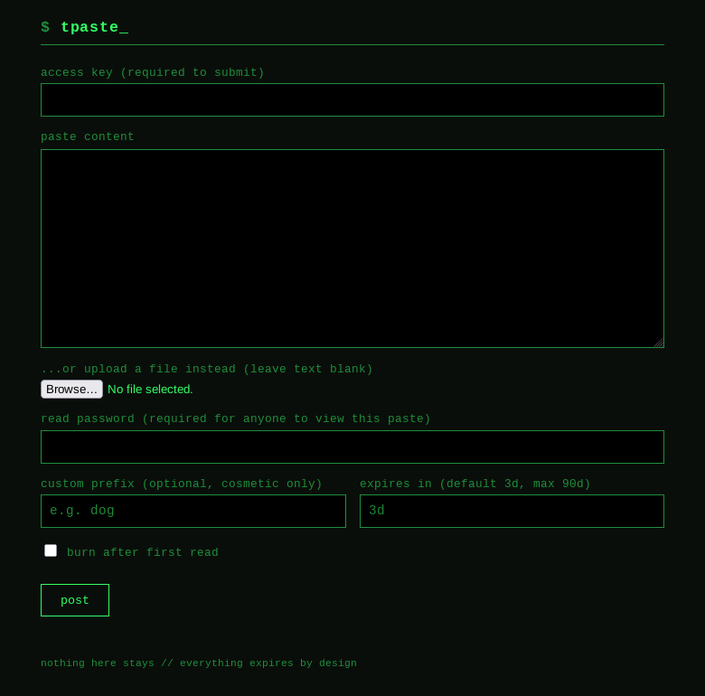

DevOps engineer who hardens the box before shipping to it.
4+ years running production cloud infrastructure, now going deeper into server hardening, self-hosted networks, and secure CI/CD. Terraform, Ansible, Docker, AWS, and increasingly, things that don't touch AWS at all.
01 / About

I'm a DevOps engineer with a full-stack background. I've personally architected, deployed, and maintained systems serving 1M+ monthly visitors in remote-first, globally distributed environments: AWS, multi-region routing, Docker at scale, the usual.
What I spend my nights on now is different: hardened Linux baselines, an air-gapped vault, a public Tor relay, and a pastebin that only exists as a hidden service. I design infrastructure for repeatability, so everything I ship can be torn down and redeployed with one command via Terraform and Ansible, and I've been pulling that same discipline into self-hosted, security-first territory instead of just AWS.
Academic background in GIS, Mathematics, and Computer Science from the University of Toronto. Currently working through the AWS Certified Solutions Architect (Associate), and teaching myself Rust by shipping things in it rather than reading about it.
02 / Skills
03 / Experience
- Owned all technical and infrastructure decisions for an early-stage AI automation product as a one-person engineering team, across AWS (EC2, S3, Route 53), Docker, and NGINX in dev, staging, and prod.
- Architected AI voice agent systems (Retell, Vapi) and workflow automation (GoHighLevel, n8n, Make.com) for client-facing telephony and CRM pipelines.
- Since early 2026, shifted from agency delivery to independent consulting and self-directed infrastructure work: self-hosting the stack on a VPS with GitHub Actions deployments, and operating a public Tor relay under the company identity.
- Built and maintained client websites (WordPress / Breakdance) and interactive proposal web apps for solar automation, mobile notary, and lead-qualification use cases.
- Evaluated infrastructure tradeoffs across cost, scalability, and development velocity to guide early product decisions.
- Collaborated with external contractors and partners in fully remote, asynchronous arrangements across time zones.
- Primary infrastructure engineer across a portfolio of sports analytics platforms, owning all cloud operations for production systems serving 1M+ monthly visitors.
- Architected a multi-region AWS deployment across 3 continents (Route 53 latency-based routing + CloudFront), achieving p95 response times under 150ms.
- Layered cybersecurity posture: NGINX SSL termination, TLS automation (Let's Encrypt / ACM), and OWASP-aligned API input validation across 3+ customer-facing dashboards.
- Deployed and operated Dockerized multi-service applications on AWS EC2, managing container orchestration and production system health across multiple live platforms simultaneously.
- Built CI/CD-friendly deployment workflows using GitHub and Docker, enabling consistent weekly releases with minimal downtime.
- Automated backend operations using Bash and Python, replacing workflows that previously required full-time manual effort.
- Designed and maintained a 4-stage Git-based CI/CD pipeline covering feature branches, pull requests, staging validation, and weekly production releases.
- Reduced mean time to detection for production errors by 60% by integrating Sentry, cutting average triage time from 30 to under 10 minutes.
- Led third-party integrations with Moneris (Java / Spring Boot), Shopify, and multiple Canadian financial institutions end to end.
- Improved database query performance by 90% by auditing and indexing critical fields in MongoDB & MySQL, cutting dashboard load time from 10s to under 1s.
- Evaluated Kubernetes as a container orchestration layer, standing up a staging cluster and identifying 5 environment-parity gaps that informed the production migration roadmap.
- Mentored junior developers and stepped into technical leadership during team transitions.
04 / Projects
22 completed hands-on infrastructure projects: Terraform-provisioned AWS environments, Ansible configuration management, GitHub Actions CI/CD, multi-container Docker deployments, automated backups to Cloudflare R2, a hardened bastion host, and a self-hosted WireGuard VPN. Every project redeploys with a single command.
A private, password-protected pastebin served only as a Tor hidden service, with a Rust CLI client. No JavaScript in the UI, so it works on Tor Browser's "Safest" setting. Each paste is encrypted at rest with AES-256-GCM, keyed via Argon2id from the read password, so the key is never stored and decrypting a paste is the password check. Write access uses per-person revocable keys, failed reads lock out after 5 attempts, and every failure mode (wrong password, missing ID, expired, locked) returns an identical response, so there is no way to probe for what exists.

A public Tor guard/middle relay on a self-managed VPS, run as a systemd service, reachable over IPv4 and IPv6 and publishing its descriptor to the Tor network. Relay identity keys were generated directly on the host and never touch Git or the CI/CD deployment path, by design.
An isolated two-VM attack lab on top of my existing Terraform/libvirt infrastructure: a Kali Linux attacker and a deliberately misconfigured Ubuntu victim on a private network. I ran a full chain of recon with Nmap, initial access via anonymous FTP and SSH brute force, privilege escalation to root, and exfiltration. Then I wrote a Python vulnerability scanner from scratch and pointed it at my own production VPS, where it caught SSH password authentication enabled and actively being brute-forced. I fixed it and deployed fail2ban the same session.
A reusable Ansible role (harden-baseline) applying CIS-aligned server hardening (key-only SSH, default-deny firewall, fail2ban, automatic security updates), provisioned onto KVM/libvirt VMs with Terraform. Designed for golden images: hardening goes on the image, SSH keys are injected per instance at deploy time via cloud-init. Includes an air-gapped encrypted vault VM on an isolated network, with data on a separate LUKS2 disk that survives VM teardown.
A multi-service stack on a self-managed KVM VPS: n8n, Traefik as reverse proxy, a jobs-board application, and an internal API service, deployed through GitHub Actions.
A containerized local bookkeeping application that pulls Stripe, Wise, and Mercury data into a SQLite ledger aligned to Form 1120 reporting. It has a CLI review workflow, local LLM-assisted suggestions via Ollama running entirely on local hardware, and a FastAPI dashboard.
A pay-per-call API for AI agents built on the x402 payment protocol (USDC on Base), with LATAM tax-ID validation (BR, AR, CL, PE, PY checksums and MX format) and an agent health-check endpoint.
05 / Contact
I break my own servers before anyone else can.
Open to remote DevOps and infrastructure roles, especially ones where security and networking aren't an afterthought. My inbox is always open.
contact@williammucha.com